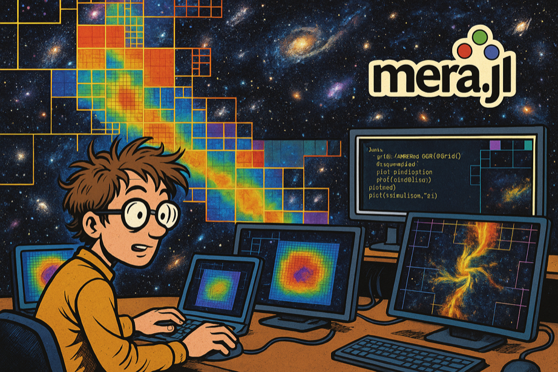

MERA.jl
High-performance analysis of astrophysical simulations in pure Julia: RAMSES natively and in full, plus AREPO, GADGET, PLUTO, Athena++, FLASH and Chombo through one unified API

MERA reads and analyzes astrophysical simulation output natively in Julia. Built for RAMSES, multi-resolution AMR grids, particles, gravity, clumps and radiative-transfer fields loaded into memory-efficient tables, and now reading AREPO, GADGET, PLUTO, Athena++, FLASH and Chombo through the same API. It computes 170+ physics-derived quantities on demand (across hydro, particles, gravity, RT and clumps) and provides conservation-correct projections, profiles, flux budgets and structure finding, all through one unified, multiple-dispatch API.
Coverage is deepest for RAMSES: it is the only code with dedicated getgravity, getrt and getclumps readers, because it writes those to separate files. Where another code stores the same physics inside its snapshot, Athena++ phi, FLASH gpot, Chombo gravitational-potential, Athena++ six-ray radiation, the reader maps it to the canonical field, so getvar(gas, :gpot) works there too. AREPO and GADGET add particles and FoF group catalogues (getgroups; subhalos are not read).
This is the multicode branch, version 2.0.0-DEV. It is master plus the frontends for AREPO, GADGET, PLUTO, Athena++, FLASH and Chombo, and it is never registered, so it is installed by URL. A frontend for AMReX/BoxLib plotfiles with a Quokka layer is in review in #273:
] add https://github.com/ManuelBehrendt/Mera.jl#multicodeThe released 1.x line reads RAMSES only.
The other readers are newer and narrower than the RAMSES one, and tested against synthetic fixtures rather than a broad range of real runs: see how mature is each reader for what each one implements and how far it has been exercised. Widening that is mostly reader work rather than core work, because the analysis layer is code-blind, so contributions and bug reports move it forward quickly.

Computational astrophysicist analyzing AMR simulation data with MERA.jl's powerful visualization and analysis capabilities
Start here
Install the package:
using Pkg
Pkg.add("Mera")
using MeraThen run something. This needs no simulation data at all, because synthetic_clumps() builds real Mera objects in memory:
using Mera
F = synthetic_clumps() # 51,514 gas cells + 2,438 particles, 8 known clumps
gas = F.gas
projection(gas, :sd, :Msol_pc2) # a 128×128 surface-density mapExpect about 10 seconds on the first call, because Julia compiles as it goes. Later calls are instant. Everything else in these docs, getvar, subregion, filterdata, profile, savedata, works on gas exactly as it does on a real snapshot.
With a snapshot of your own, point getinfo at the output folder and continue the same way:
info = getinfo(300, "/path/to/simulation") # reads output_00300
gas = gethydro(info)Next: First Look. It shows what one command tells you about an unfamiliar output, and what it costs on a large one. From there the sidebar follows the order you will actually work in: inspect, load, select, compute, project.
Installing the plotting packages
Mera itself draws nothing. The tutorials plot with CairoMakie, and a few of the older projection pages use PyPlot. Neither is a Mera dependency, so add whichever you need before running a page that plots:
Pkg.add("CairoMakie") # what most tutorial figures use
Pkg.add("PyPlot") # only the projection pages that import itMera's Makie support ships as a package extension: it activates by itself once a Makie backend such as CairoMakie is loaded, with nothing further to install.
Requirements: Julia 1.10 or newer, 1.12+ recommended, and 8GB+ RAM Platforms: macOS (including Apple Silicon), Linux, Windows Tested on every push: Julia 1.10 / 1.11 / 1.12 × Linux, macOS and Windows, nine jobs
Julia 1.10 is the minimum the package supports (julia = "1.10" in Project.toml) and stays in CI so it keeps working. 1.12 is what we recommend running: the compiler is faster and the garbage collector handles the large allocations of AMR and particle analysis better, which is most of what Mera does. CI runners have no simulation data, so they exercise the data-free tiers: the synthetic-HDF5 reader contracts, the reader registry, the IO layer and the mera-file round-trips, while the full suite runs against real snapshots locally.
What Mera gives you
One API across data types. Mera reads six: hydro, particles, gravity, clumps, sinks and radiative transfer. MHD is not a seventh, the magnetic field arrives as extra columns on hydro. The same function name works on each, and Julia's multiple dispatch selects the right method, so you write the analysis once:
getvar(gas, :mass) # cell mass, density times volume
getvar(particles, :mass) # particle mass, discrete values
getvar(clumps, :mass) # clump total mass, aggregated
getvar(sinks, :mass) # sink mass, the column RAMSES calls msink
getvar(gravity, :epot) # gravity carries a potential, not a mass
getvar(rt, :Np1) # photon density of group 1
getvar(gas, :bx) # MHD, as a field on the hydro cells
projection(gas, :rho) # gas density
projection(particles, :age) # stellar age distribution
projection(rt, :Np1) # photon density, through the same engineDispatch picks the method, it does not invent physics: a quantity exists where it means something. :mass is defined for gas, particles, clumps and sinks, while gravity and RT carry fields instead. Projection covers the types laid out on the AMR grid and the particles, so clumps and sinks, which are catalogues of points, are analysed through regions and getvar rather than projected.
AMR handled correctly. Multi-resolution grids are read natively from the RAMSES binary format, with Hilbert space-filling curve support, correct level weighting, and projections that conserve mass across refinement boundaries.
Built for large outputs on ordinary machines. Selective loading and an IndexedTables.jl backend keep memory in hand, multi-threaded IO is measured rather than assumed, and MERA-files store snapshots compressed for fast time-series work.
Physics on demand. Derived quantities for gas, particles, gravity and clumps, from Jeans mass to Mach numbers to virial parameters, computed on request rather than stored. Call getvar() with no arguments for the current list.
Results you can defend. Pin versions with a Project.toml and Manifest.toml in your own analysis project, and record what produced each number with provenance. VTK export preserves AMR structure for ParaView and VisIt.
Mera supports RAMSES stable-17.09 through stable-19.10, plus RAMSES 2025.05 (beta), and is in active use and active development.
About the data in these tutorials
The tutorial pages analyse research-scale RAMSES simulations, several gigabytes each, which are not distributed. They are worked examples: read them to see what an analysis of real data looks like, and adapt the code to your own outputs. Running a page unchanged will not work, because the simulation it points at is not something you have.
If you want something you can run immediately, Mera publishes a small set of test simulations, eleven of them, a few megabytes each. Every one carries either an analytic oracle, a law that follows from its own setup, or is checked against reference values published by the RAMSES developers. They ship with a getting-started example, and Mera's own test suite verifies the package against them, so you can confirm an installation behaves correctly without a large download. See testdata/README.md in the repository for how to fetch them.
Two tutorial pages already use data you can obtain: the radiative-transfer page runs on one of the published test simulations, and the cosmology page carries download instructions for the yt project's public sample dataset.
Every tutorial builds its paths from one variable, so you do not have to edit the cells. Point it at your own simulations and the examples run against them:
ENV["MERA_EXAMPLES"] = "/path/to/your/simulations" # before `using Mera`Where to go next
If you already know what you want to compute:
| you want to | go to |
|---|---|
| see what is in an unfamiliar output | First Look |
| learn the objects and the units | First Steps |
| make a density map | Projections |
| load only part of a large output | Load by Selection |
| cut out a spatial region | Get Subregions |
| compute masses and other quantities | Basic Calculations |
| store or share a snapshot | MERA Files |
| make it faster | Multi-Threading |
| look up a function | Complete API |
Coming from another analysis tool, or new to Julia:
- Coming from Other Tools, a concept-to-verb mapping, one complete worked workflow, and the differences to expect, stated honestly
- Julia for Simulation Analysis, environments, compile latency, memory and threads, scoped to this kind of work
- Troubleshooting, the first-hour errors, listed under the message Mera actually prints
Community and support
- GitHub Discussions: ask questions, share tips, get help
- Show and Tell: share your scientific results and visualizations
- Report Issues: bug reports and feature requests
- In the REPL:
?getinfofor function docs,methods(getinfo)for available methods - Jupyter notebooks and RUM2023 materials
Ambient Study Music
Ambient Study Music: by MERA, inspired by astrophysics. Eighteen tracks, each named after an astronomical object. Written alongside the package, and meant for long sessions with data.

Spotify · Apple Music · YouTube
Citation and license
If you use MERA in your research, please cite it using the DOI badge above. This supports continued development and helps other researchers discover the tool. Click the badge for BibTeX format. Please also star the GitHub repository.
MIT License, Copyright (c) 2019 Manuel Behrendt.
Permission is hereby granted, free of charge, to any person obtaining a copy of this software and associated documentation files (the "Software"), to deal in the Software without restriction, including without limitation the rights to use, copy, modify, merge, publish, distribute, sublicense, and/or sell copies of the Software, and to permit persons to whom the Software is furnished to do so, subject to the following conditions:
The above copyright notice and this permission notice shall be included in all copies or substantial portions of the Software.
THE SOFTWARE IS PROVIDED "AS IS", WITHOUT WARRANTY OF ANY KIND, EXPRESS OR IMPLIED, INCLUDING BUT NOT LIMITED TO THE WARRANTIES OF MERCHANTABILITY, FITNESS FOR A PARTICULAR PURPOSE AND NONINFRINGEMENT. IN NO EVENT SHALL THE AUTHORS OR COPYRIGHT HOLDERS BE LIABLE FOR ANY CLAIM, DAMAGES OR OTHER LIABILITY, WHETHER IN AN ACTION OF CONTRACT, TORT OR OTHERWISE, ARISING FROM, OUT OF OR IN CONNECTION WITH THE SOFTWARE OR THE USE OR OTHER DEALINGS IN THE SOFTWARE.